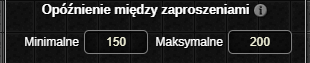

锔 UWAGA: Dopóki zestaw nie osignie stabilnej wersji (1.0.0) mog pojawia si bdy oraz zmiany podstawowych funkcjonalnoci (Zgaszanie Bdów)
Zapraszanie Do Grupy
Ten dodatek jest dostpny wycznie w wersji Premium.
Rozbudowane automatyczne wysyanie zaprosze do grup.

Okno Ustawie
Skróty klawiszowe

- Klawisz do zapraszania odpowiada za zapraszanie graczy znajdujcych si w tej samej lokacji co bohater wedug relacji wybranych w zakadce automatycznie wysyaj do.
- Klawisz do masowego zapraszania odpowiada za zapraszanie czonków klanu, przyjació oraz graczy znajdujcych si w tej samej lokacji co bohater.
- Podczas masowego zapraszania graczy na tej samej mapie co bohater pod uwage brane s ustawienia z zakadki automatycznie wysyaj do.
Op贸藕nienie midzy zaproszeniami

Op贸藕nienie midzy zaproszeniami okrela zakres czasowy w milisekundach midzy wysyaniem zaprosze do grupy.
Automatycznie wysyaj do

Lista relacji uwzgldniana podczas zapraszania oraz masowego zapraszania (graczy z mapy) za pomoc dodatku.
Masowo zapraszaj

Lista relacji uwzgldniana podczas masowego zapraszania za pomoc dodatku.
Lista wyklucze

Je偶eli nick gracza znajduje si na licie wyklucze, zaproszenie nie zostanie do niego wysane.
Okno Aktywnych Ustawie
Ustawienia z tego okna s uwzgldniane wycznie podczas zapraszania za pomoc przycisków Zapro lub Zapro masowo.

- Mo偶liwo zapraszania graczy wedug profesji.
- Filtrowanie graczy z listy kandydatów na podstawie obecnego stanu grupy oraz wszystkich wczonych filtrów profesji. Je偶eli filtr jest wyczony 偶aden gracz o danej profesji nie zostanie zaproszony.
- Mo偶liwo zapraszania graczy wedug nicków.
- Mo偶liwo zapraszania graczy wedug poziomów.
Ostatnia aktualizacja: 0.14.4